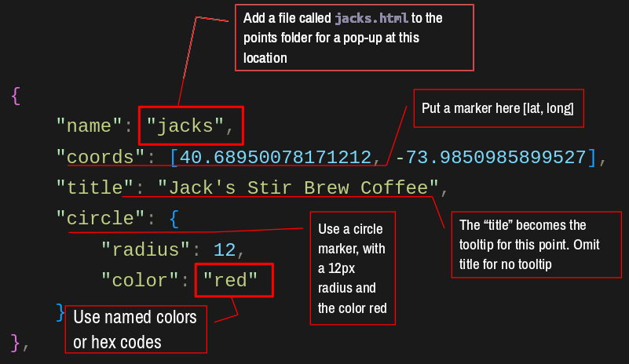

Video: Map Markers in Leaflet
Click here to open the code in Codesandbox
points.js
In this Javascript configuration file you will be able to:
- add point locations to your map
- set the marker style
- default
- circle
- custom
- add a tooltip to your marker
// this example has 3 points
let points = [
{
"name": "sfc",
"coords": [40.6903, -73.9863],
"title": "Adelphi Brooklyn Center @ St Francis College",
"icon": AUIcon
},
{
"name": "jacks",
"coords": [40.6895, -73.9851],
"title": "Jack's Stir Brew Coffee",
"circle": {
"radius": 12,
"color": "blue"
}
},
{
"name": "devocion",
"coords": [40.6886, -73.9834],
"title": "Devoción Coffee"
}
]

name(required) is a unique identifier for the point and must match the pop-up html (if you want a pop-up)coords(required) the latitude and longitude of the pointtitle(optional) the text that will appear in the tooltip- marker style
icon(optional) the custom icon to use for the markercircle(optional) the style of the circle marker- if no style is set, the default marker will be used
Custom Marker Icons
const AUIcon = L.icon({
iconUrl: "/img/au.png",
iconSize: [64, 54], // size of the icon
iconAnchor: [32, 27], // point of the icon which will correspond to marker's location
popupAnchor: [-3, -76] // point from which the popup should open relative to the iconAnchor
});
To create a custom icon:
- Create (or find) the icon image (png, jpg, gif, or svg)
- On your computer, scale it to the desired size (more or less)
- Upload it to the
/imgdirectory in your project root - Create a new icon using the
L.iconmethod (example above)- the variable name (
AUIcon) should a good, short, valid name that describes the icon- use it every time you want to use the icon
iconUrlis the path to the image, must match exactly including the path and the caseiconSizeis the size of the image in pixels, [width,height]iconAnchoris the point on the image that will be placed relative to the marker’s location (x, y relative to the anchor)popupAnchordefines the offset from the pop-up and the anchor point
- the variable name (